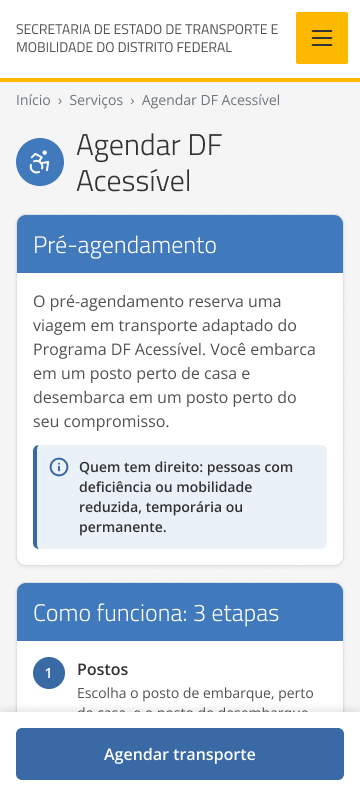
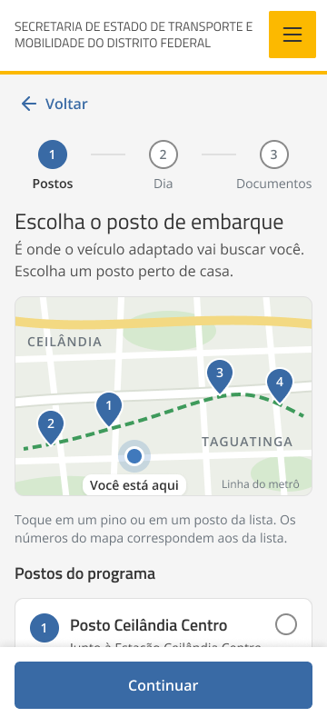
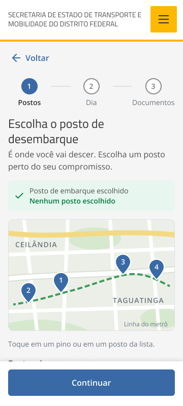
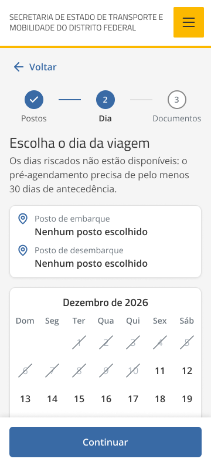
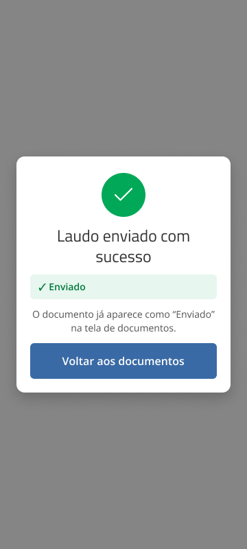
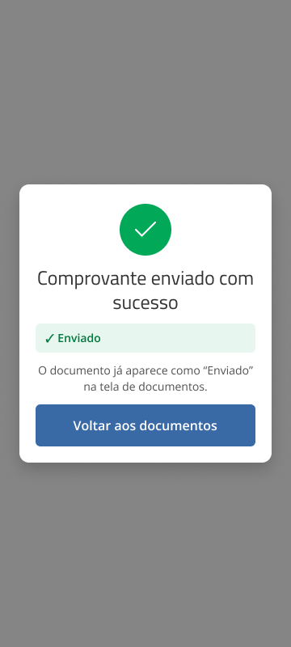

Histórico de Versão e Contribuição¶
| Data | Versão | Descrição | Autor(es) | Revisor(es) | Declaração de Uso de IA |
|---|---|---|---|---|---|
| 15/11/2026 | 1.0 |
Consolidação e relato dos resultados do teste de usabilidade do Protótipo de Alta Fidelidade (TAR-02) com 3 participantes. | Gabriel Cardone | Arthur Mariani | Claude (Anthropic) - usado para apoio na transcrição das gravações, na medição dos tempos a partir dos vídeos e na formatação markdown da página. |
| 20/11/2026 | 1.1 |
Inclusão da seção com as telas do protótipo de alta fidelidade e do link para o protótipo no Figma, inclusão dos TCLEs assinados pelos participantes e renumeração das seções e figuras. | Gabriel Cardone | Pendente de revisão | Claude (Anthropic) - formatação markdown. |
Relato dos Resultados da Avaliação do Protótipo de Alta Fidelidade (TAR-02)¶
Neste documento, apresenta-se o Relato dos Resultados da Avaliação do Protótipo de Alta Fidelidade referente à TAR-02 (Pré-agendamento no Programa DF Acessível). A avaliação seguiu o Planejamento da Avaliação do Protótipo de Alta Fidelidade, e a estrutura deste relato segue o Planejamento do Relato, mantendo o padrão do Relato dos Resultados da Avaliação do Protótipo de Papel para permitir a comparação entre os dois níveis.
Artefatos relacionados — fluxo da funcionalidade TAR-02 (Pré-agendamento no Programa DF Acessível):
- Persona: Larissa Ferreira Lima
- Cenário: Cenário 1
- Análise de tarefas: TAR-02
- Storyboard: Storyboard 02
- Nível 1: avaliação do storyboard e da análise de tarefas: Planejamento da avaliação · Planejamento do relato · Relato dos resultados
- Nível 2: protótipo de papel (baixa fidelidade): Planejamento da avaliação · Planejamento do relato · Relato dos resultados
- Nível 3: protótipo de alta fidelidade: Planejamento da avaliação · Planejamento do relato · Relato dos resultados (esta página)
- Telas do protótipo de papel: telas no planejamento da avaliação
- Protótipo de alta fidelidade navegável: acessar o protótipo
1. O Protótipo Avaliado¶
O objeto desta avaliação é o protótipo interativo de alta fidelidade da TAR-02 (Pré-agendamento no Programa DF Acessível), desenvolvido no Figma na versão para celular e em conformidade com o Guia de Estilo do Grupo 05:
- Protótipo Interativo no Figma: Acessar o protótipo no Figma
As Figuras 1 a 10 mostram as telas do protótipo de alta fidelidade da TAR-02, no estado em que aparecem ao serem abertas no celular. As Figuras 7 a 10 são as sobreposições abertas a partir da tela de documentos.
Figura 1: Apresentação do pré-agendamento, com a explicação do serviço, o público atendido, as 3 etapas e o botão "Agendar transporte" (tela 1 do protótipo)

Fonte: Elaborado por Gabriel Cardone (2026). Tela exportada do [protótipo no Figma](https://www.figma.com/proto/AIO6YnlBnPcriwQzsEdHpi/Prot%C3%B3tipo-Alta-Fidelidade-%E2%80%94-TAR-02-DF-Acess%C3%ADvel--SEMOB-DF-?node-id=6-67&starting-point-node-id=6%3A67&t=a6O7kf7iKozAdr05-1).
Figura 2: Escolha do posto de embarque, com o indicador de etapas, o mapa com os postos numerados e a lista "Postos do programa" (tela 2 do protótipo)

Fonte: Elaborado por Gabriel Cardone (2026). Tela exportada do [protótipo no Figma](https://www.figma.com/proto/AIO6YnlBnPcriwQzsEdHpi/Prot%C3%B3tipo-Alta-Fidelidade-%E2%80%94-TAR-02-DF-Acess%C3%ADvel--SEMOB-DF-?node-id=6-67&starting-point-node-id=6%3A67&t=a6O7kf7iKozAdr05-1).
Figura 3: Escolha do posto de desembarque, com a confirmação do posto de embarque escolhido no topo (tela 3 do protótipo)

Fonte: Elaborado por Gabriel Cardone (2026). Tela exportada do [protótipo no Figma](https://www.figma.com/proto/AIO6YnlBnPcriwQzsEdHpi/Prot%C3%B3tipo-Alta-Fidelidade-%E2%80%94-TAR-02-DF-Acess%C3%ADvel--SEMOB-DF-?node-id=6-67&starting-point-node-id=6%3A67&t=a6O7kf7iKozAdr05-1).
Figura 4: Escolha do dia da viagem, com o resumo dos postos e o calendário de dezembro de 2026 com os dias indisponíveis riscados (tela 4 do protótipo)

Fonte: Elaborado por Gabriel Cardone (2026). Tela exportada do [protótipo no Figma](https://www.figma.com/proto/AIO6YnlBnPcriwQzsEdHpi/Prot%C3%B3tipo-Alta-Fidelidade-%E2%80%94-TAR-02-DF-Acess%C3%ADvel--SEMOB-DF-?node-id=6-67&starting-point-node-id=6%3A67&t=a6O7kf7iKozAdr05-1).
Figura 5: Envio dos documentos (laudo e comprovante de residência) e dos dados de contato (tela 5 do protótipo)
Fonte: Elaborado por Gabriel Cardone (2026). Tela exportada do [protótipo no Figma](https://www.figma.com/proto/AIO6YnlBnPcriwQzsEdHpi/Prot%C3%B3tipo-Alta-Fidelidade-%E2%80%94-TAR-02-DF-Acess%C3%ADvel--SEMOB-DF-?node-id=6-67&starting-point-node-id=6%3A67&t=a6O7kf7iKozAdr05-1).
Figura 6: Conclusão do pré-agendamento, com o número de protocolo, o aviso de envio do comprovante e o resumo da viagem (tela 6 do protótipo)
Fonte: Elaborado por Gabriel Cardone (2026). Tela exportada do [protótipo no Figma](https://www.figma.com/proto/AIO6YnlBnPcriwQzsEdHpi/Prot%C3%B3tipo-Alta-Fidelidade-%E2%80%94-TAR-02-DF-Acess%C3%ADvel--SEMOB-DF-?node-id=6-67&starting-point-node-id=6%3A67&t=a6O7kf7iKozAdr05-1).
Figura 7: Seletor de arquivos aberto a partir do campo "Laudo do profissional de saúde" (sobreposição O1 do protótipo)
Fonte: Elaborado por Gabriel Cardone (2026). Tela exportada do [protótipo no Figma](https://www.figma.com/proto/AIO6YnlBnPcriwQzsEdHpi/Prot%C3%B3tipo-Alta-Fidelidade-%E2%80%94-TAR-02-DF-Acess%C3%ADvel--SEMOB-DF-?node-id=6-67&starting-point-node-id=6%3A67&t=a6O7kf7iKozAdr05-1).
Figura 8: Seletor de arquivos aberto a partir do campo "Comprovante de residência" (sobreposição O2 do protótipo)
Fonte: Elaborado por Gabriel Cardone (2026). Tela exportada do [protótipo no Figma](https://www.figma.com/proto/AIO6YnlBnPcriwQzsEdHpi/Prot%C3%B3tipo-Alta-Fidelidade-%E2%80%94-TAR-02-DF-Acess%C3%ADvel--SEMOB-DF-?node-id=6-67&starting-point-node-id=6%3A67&t=a6O7kf7iKozAdr05-1).
Figura 9: *Pop-up* "Laudo enviado com sucesso" (sobreposição O3 do protótipo)

Fonte: Elaborado por Gabriel Cardone (2026). Tela exportada do [protótipo no Figma](https://www.figma.com/proto/AIO6YnlBnPcriwQzsEdHpi/Prot%C3%B3tipo-Alta-Fidelidade-%E2%80%94-TAR-02-DF-Acess%C3%ADvel--SEMOB-DF-?node-id=6-67&starting-point-node-id=6%3A67&t=a6O7kf7iKozAdr05-1).
Figura 10: *Pop-up* "Comprovante enviado com sucesso" (sobreposição O4 do protótipo)

Fonte: Elaborado por Gabriel Cardone (2026). Tela exportada do [protótipo no Figma](https://www.figma.com/proto/AIO6YnlBnPcriwQzsEdHpi/Prot%C3%B3tipo-Alta-Fidelidade-%E2%80%94-TAR-02-DF-Acess%C3%ADvel--SEMOB-DF-?node-id=6-67&starting-point-node-id=6%3A67&t=a6O7kf7iKozAdr05-1).
2. Introdução e Objetivos da Avaliação¶
2.1 Escopo do Protótipo Avaliado¶
O protótipo avaliado foi construído no Figma e representa, na versão para celular do site da SEMOB-DF, a funcionalidade de pré-agendamento de viagens do Programa DF Acessível. Ele mantém o fluxo aprovado no protótipo de papel, agora com o acabamento visual do Guia de Estilo. As telas avaliadas foram:
- Apresentação ("Agendar DF Acessível"): explicação do pré-agendamento, público atendido, resumo das 3 etapas (Postos, Dia, Documentos), aviso de 30 dias de antecedência e botão "Agendar transporte".
- Posto de embarque: indicador de etapas, mapa com os postos numerados e a marcação "Você está aqui", lista "Postos do programa" com distância e recursos de acessibilidade de cada posto, e botão "Continuar".
- Posto de desembarque: mesma estrutura, com a confirmação do posto de embarque já escolhido no topo.
- Dia: resumo dos postos escolhidos, calendário de dezembro de 2026 com os dias indisponíveis riscados, confirmação do dia escolhido por extenso e botão "Continuar".
- Documentos: campos "Laudo do profissional de saúde" e "Comprovante de residência" com o botão "Selecionar arquivo", seletor de arquivos simulado, pop-up de confirmação de envio, campos de telefone (WhatsApp) e e-mail e botão "Concluir pré-agendamento".
- Conclusão: mensagem "Pré-agendamento concluído", número de protocolo, aviso de envio do comprovante por WhatsApp e e-mail, resumo da viagem e botão "Ir para a página inicial".
2.2 Objetivos e Metas¶
Os objetivos foram avaliar a eficácia e a eficiência das três etapas do fluxo, confirmar a compreensão dos rótulos com o acabamento final, verificar a conformidade com o Guia de Estilo, avaliar a legibilidade e as áreas de toque e subsidiar o refinamento final no Figma. As metas de usabilidade definidas no planejamento foram:
- M01 (Eficácia): pelo menos 2 dos 3 participantes concluem cada tarefa sem pedir ajuda.
- M02 (Eficiência): fluxo completo concluído em até 3 minutos por participante.
- M03 (Erros): no máximo 1 erro por tarefa, em média.
- M04 (Satisfação): nenhum participante classifica a experiência como difícil.
3. Metodologia Empregada¶
Foi aplicado o Teste de Usabilidade (Barbosa et al., 2021, Seção 12.2.1) com a técnica de pensar em voz alta (think aloud), seguido de uma entrevista pós-teste com as perguntas Q01 a Q05. Cada participante recebeu o Cenário 1 ("Você precisa de transporte adaptado para ir à fisioterapia, em Taguatinga, daqui a um mês. Você mora em Ceilândia [...] Faça o pré-agendamento da viagem.") e executou as tarefas TAR-02.1 a TAR-02.3.
- Dispositivo: celular, com o protótipo aberto no navegador pelo modo de apresentação do Figma. O participante tocou diretamente na tela, como faria no site real.
- Gravação: câmera filmando o participante, com a gravação da tela do celular sobreposta no vídeo.
- Duração real das sessões: entre 2min12s e 2min17s cada (tarefas e entrevista), abaixo dos 5 minutos previstos.
- Medição: os tempos de cada tarefa foram medidos a partir das gravações, pela troca de tela no celular, com precisão aproximada de ±2 segundos.
3.1 Desvios em Relação ao Planejamento¶
- Cronograma: as sessões não seguiram os horários da Tabela 4 do planejamento. P1 e P2 foram realizadas em sequência, no mesmo ambiente, pela manhã; P3 foi realizada em outro ambiente, no fim da tarde.
- Identificação na gravação: o planejamento previa que os participantes fossem chamados apenas pelos códigos P1, P2 e P3 também na fala do avaliador, mas nas gravações eles foram chamados pelo primeiro nome. Neste relato, os participantes são identificados apenas pelos códigos.
- Perfil dos participantes: foi utilizado o perfil alternativo, e não o perfil prioritário (pessoas com mobilidade reduzida). Ver Seção 4.
4. Caracterização dos Participantes e Papéis da Equipe¶
- Avaliador Condutor e Observador: Gabriel Cardone, que apresentou o cenário, cronometrou as tarefas, conduziu a entrevista pós-teste e não precisou intervir durante as tarefas.
- Participantes: 3 participantes (P1, P2 e P3), todos com o perfil alternativo: pessoas sem mobilidade reduzida que já precisaram agendar transporte para parentes, representando quem faz o agendamento em nome da persona Larissa Ferreira Lima. Nenhum deles participou da avaliação do protótipo de papel.
- Aspectos éticos: antes de cada sessão, o participante assinou o Termo de Consentimento Livre e Esclarecido (TCLE). Os termos assinados por P1, P2 e P3 estão na Tabela 1, e o aceite aparece registrado no início das gravações de P1 e P3. Os vídeos foram publicados como "não listados" no YouTube.
4.1 Gravações das Sessões¶
Tabela 1: Gravações das Sessões de Teste e Termos de Consentimento Assinados
| Participante | Gravação | Duração | TCLE Assinado |
|---|---|---|---|
| P1 | Assistir à sessão do P1 | 2min17s | TCLE do P1 |
| P2 | Assistir à sessão do P2 | 2min12s | TCLE do P2 |
| P3 | Assistir à sessão do P3 | 2min12s | TCLE do P3 |
Fonte: Elaborado por Gabriel Cardone (2026).
5. Sumário dos Dados de Desempenho¶
5.1 Desempenho por Participante e Tarefa¶
Uma tarefa foi considerada Satisfatória quando concluída sem pedido de ajuda e com no máximo 1 erro, e Com Falhas quando houve pedido de ajuda, mais de 1 erro, desistência ou quando o resultado final não correspondeu ao que a tarefa pedia.
Tabela 2: Desempenho por Participante e Tarefa no Protótipo de Alta Fidelidade
| ID Tarefa | Participante | Sucesso sem Ajuda? | Tempo Gasto | Erros | Pedidos de Ajuda | Avaliação da Usabilidade |
|---|---|---|---|---|---|---|
| TAR-02.1 | P1 | Sim | 00:16 | 0 | 0 | Satisfatório |
| TAR-02.1 | P2 | Parcial ¹ | 00:16 | 1 | 0 | Com Falhas |
| TAR-02.1 | P3 | Sim | 00:11 | 0 | 0 | Satisfatório |
| TAR-02.2 | P1 | Sim | 00:09 | 0 | 0 | Satisfatório |
| TAR-02.2 | P2 | Sim | 00:07 | 0 | 0 | Satisfatório |
| TAR-02.2 | P3 | Sim | 00:06 | 0 | 0 | Satisfatório |
| TAR-02.3 | P1 | Sim | 00:16 | 0 | 0 | Satisfatório |
| TAR-02.3 | P2 | Sim | 00:16 | 0 | 0 | Satisfatório |
| TAR-02.3 | P3 | Sim | 00:15 | 0 | 0 | Satisfatório |
Fonte: Elaborado por Gabriel Cardone (2026), a partir das gravações das sessões.
¹ P2 concluiu a etapa sem pedir ajuda, mas escolheu os postos invertidos em relação ao cenário: Posto Taguatinga Centro como embarque e Posto Ceilândia Centro como desembarque, quando o cenário pedia embarque perto de casa (Ceilândia) e desembarque perto da clínica (Taguatinga). A inversão não foi percebida nem no resumo da tela "Dia" nem no resumo da tela de conclusão, onde P2 comentou que estava "tudo certinho". Por isso, a escolha foi contada como 1 erro e a tarefa foi classificada como Com Falhas (ver PROB-AF01).
Além das três tarefas, os participantes leram a tela de apresentação antes de tocar em "Agendar transporte". O tempo total de cada participante, da abertura da tela de apresentação até a tela "Pré-agendamento concluído", foi:
Tabela 3: Tempo Total do Fluxo por Participante
| Participante | Leitura da Apresentação | TAR-02.1 a TAR-02.3 | Total |
|---|---|---|---|
| P1 | 00:23 | 00:41 | 01:04 |
| P2 | 00:16 | 00:39 | 00:55 |
| P3 | 00:11 | 00:32 | 00:43 |
| Média | 00:17 | 00:37 | 00:54 |
Fonte: Elaborado por Gabriel Cardone (2026), a partir das gravações das sessões.
5.2 Verificação das Metas e Comparação com o Protótipo de Papel¶
Tabela 4: Metas de Usabilidade e Comparação entre os Níveis
| Meta | Critério | Resultado no Protótipo de Papel | Resultado na Alta Fidelidade | Meta Atingida? |
|---|---|---|---|---|
| M01 | Pelo menos 2 de 3 participantes concluem cada tarefa sem ajuda. | 1 de 1 participante, nas 3 tarefas. | Nenhum pedido de ajuda. TAR-02.1: 2 de 3 com o resultado correto; TAR-02.2 e TAR-02.3: 3 de 3. | Sim |
| M02 | Fluxo completo em até 3 minutos. | Cerca de 70 segundos. | Média de 54 segundos; maior tempo de 1min04s (P1). | Sim |
| M03 | No máximo 1 erro por tarefa, em média. | Nenhum erro registrado. | TAR-02.1: 0,33 erro em média; TAR-02.2 e TAR-02.3: nenhum erro. | Sim |
| M04 | Nenhum participante avalia a experiência como difícil. | Avaliação positiva. | P1 e P2 deram nota 10; P3 descreveu a funcionalidade como "muito prática". | Sim |
Fonte: Elaborado por Gabriel Cardone (2026), com dados do relato do protótipo de papel (Seção 4).
Na comparação por tarefa, a escolha dos postos caiu de 23 segundos no papel para 14 segundos em média, e o envio dos documentos caiu de 40 para 16 segundos em média. A escolha do dia manteve cerca de 7 segundos. Parte dessa diferença se explica pelo meio: no papel, o avaliador precisava trocar as telas e posicionar os elementos manualmente.
6. Consolidação da Entrevista Pós-teste¶
Tabela 5: Síntese das Respostas da Entrevista Pós-teste
| ID | Foco | Pergunta Aplicada | Síntese das Respostas de P1 a P3 | Atendeu ao Critério? |
|---|---|---|---|---|
| Q01 | Envio de Documentos | "Como você soube que os documentos tinham sido enviados? Enviar o laudo e o comprovante de residência foi fácil?" | Os três reconheceram a confirmação de envio. P1 e P2 citaram o pop-up, e P1 notou que o documento "permanecia como enviado" depois de fechá-lo. P3 citou a confirmação no resumo final. Todos acharam o envio fácil: "foram só poucos cliques" (P1) e "as áreas [estão] bem identificadas" (P2). P3 percebeu o seletor simulado como os documentos do próprio celular. | Sim |
| Q02 | Interpretação de Rótulos | "Com suas palavras, qual a diferença entre o posto de embarque e o de desembarque?" | Os três explicaram corretamente: o embarque é onde a pessoa acessa o transporte e o desembarque é onde ela desce, no destino final. Inclusive P2, que inverteu os postos durante a tarefa. | Sim |
| Q03 | Guia de Estilo | "Ficou claro o que era para escolher e o que era para avançar de tela?" | Todos responderam que sim. P3 destacou que, nos postos, o mapa deixa claro o que selecionar e qual posto está mais perto da sua localização. | Sim |
| Q04 | Acessibilidade | "Teve dificuldade para ler algum texto ou acertar algum botão?" | Nenhum participante relatou dificuldade, e não foram observados toques fora do alvo nas gravações. | Sim |
| Q05 | Satisfação | "Como você avalia a facilidade de uso? Usaria isso na vida real?" | P1 e P2 deram nota 10 e disseram não ter observações. P3 disse que "qualquer pessoa com o mínimo de letramento digital" consegue usar. Os três disseram que usariam na vida real. | Sim |
Fonte: Elaborado por Gabriel Cardone (2026), a partir das gravações das sessões.
Há uma divergência entre a Q02 e o desempenho de P2 na TAR-02.1: o participante entende a diferença entre os postos, mas escolheu os postos trocados. Isso indica que o problema não está no rótulo, e sim na falta de apoio da interface para conferir se o posto escolhido corresponde à casa e ao destino do usuário (ver PROB-AF01).
7. Tabela de Problemas de IHC¶
Tabela 6: Registro e Priorização dos Problemas de Usabilidade
| ID Problema | Tela / Componente | Descrição e Justificativa | Participantes Afetados | Fatores de Usabilidade Prejudicados | Severidade (0 a 4) | Sugestão de Solução |
|---|---|---|---|---|---|---|
| PROB-AF01 | Telas de posto de embarque e de desembarque / lista "Postos do programa" | P2 escolheu os postos invertidos e não percebeu a troca em nenhum dos dois resumos (tela "Dia" e tela de conclusão). A lista mostra a distância de cada posto até "você", mas não destaca qual é o mais próximo de casa, e o resumo não convida o usuário a conferir os postos. Em uso real, a inversão geraria uma viagem no sentido errado, descoberta só no dia. | P2 | Eficácia; Prevenção de erros | 2 — Pequeno | Destacar o posto mais próximo com a etiqueta "Mais perto de você" e ordenar a lista por distância; na tela de desembarque, mostrar a distância a partir do posto de embarque; no resumo da tela "Dia", exibir os postos no formato "De [embarque] → Para [desembarque]" com a opção "Trocar". |
| PROB-AF02 | Tela de conclusão / botão "Ir para a página inicial" | P1 tocou em "Ir para a página inicial" logo após a conclusão, sem ler o resumo nem o número de protocolo. O impacto é baixo, porque o comprovante também é enviado por WhatsApp e e-mail, mas o protocolo é a referência para falar com a SEMOB-DF sobre a viagem. | P1 | Memorabilidade | 1 — Cosmético | Adicionar a ação "Copiar protocolo" ao lado do número e manter o botão "Ir para a página inicial" abaixo do resumo da viagem. |
Fonte: Elaborado por Gabriel Cardone (2026).
A severidade do PROB-AF01 foi classificada como 2 porque ocorreu com 1 dos 3 participantes, que não precisou de ajuda para concluir a etapa. Ainda assim, ele deve ser priorizado entre os ajustes, porque o erro não é percebido pelo usuário e tem consequência real.
8. Conformidade com o Guia de Estilo¶
Tabela 7: Verificação de Conformidade com o Guia de Estilo
| Diretriz do Guia de Estilo | Padrão Esperado | Evidência nos Testes | Status |
|---|---|---|---|
| Rótulos das ações (Elementos de Ação, 4.1) | Os rótulos informam o efeito da ação, sem termos genéricos como "Clique aqui". | Os participantes leram em voz alta e anteciparam o efeito de "Agendar transporte", "Selecionar arquivo" e "Concluir pré-agendamento" antes de tocar. | Conforme |
| Distinção entre seleção e ação (Elementos de Ação, 4.2) | Elementos de seleção são visualmente diferentes dos que avançam no fluxo. | Os cartões de posto (com marcação "Selecionado") e os dias do calendário foram usados para escolher, e o botão "Continuar" para avançar. Na Q03, todos disseram que a diferença ficou clara. | Conforme |
| Feedback (Elementos de Ação, 4.3) | Depois de cada ação, o sistema informa o que aconteceu. | O pop-up "Laudo enviado com sucesso", o status "Enviado" em cada documento e a tela "Pré-agendamento concluído" foram reconhecidos por todos (Q01). | Conforme |
| Sequência de diálogo (Vocabulário e Padrões, 4.3) | Postos → dia → documentos → feedback de conclusão. | Nenhum participante tentou pular ou voltar etapas. | Conforme |
| Legibilidade e áreas de toque | Textos legíveis, contraste adequado e alvos de toque amplos. | Nenhum toque fora do alvo e nenhuma dificuldade de leitura relatada (Q04). Ressalva: nenhum participante tem mobilidade reduzida. | Conforme |
Fonte: Elaborado por Gabriel Cardone (2026).
9. Plano de Reprojeto no Figma¶
Conforme o planejamento, as correções foram priorizadas pela severidade e pela frequência:
- PROB-AF01 (severidade 2) — prioridade: incluir a etiqueta "Mais perto de você", ordenar os postos por distância e mostrar o trajeto "De → Para" com a opção "Trocar" no resumo da tela "Dia". Mesmo com severidade 2, este ajuste é o primeiro da lista, porque o erro passa despercebido pelo usuário.
- PROB-AF02 (severidade 1) — se houver tempo: incluir a ação "Copiar protocolo" na tela de conclusão.
- Guia de Estilo: nenhuma diretriz se mostrou insuficiente. Fica a sugestão, para discussão com a equipe, de uma diretriz para que resumos de escolhas importantes sempre ofereçam a opção de corrigi-las.
- Modelos de tarefa: o teste não revelou passos novos ou desnecessários, então o HTA e o CTT da TAR-02 não precisam de revisão.
10. Conclusão e Limitações¶
O teste indicou que o protótipo de alta fidelidade da TAR-02 atinge as quatro metas de usabilidade: os três participantes concluíram o fluxo sem pedir ajuda, em menos de 1min05s, com no máximo 1 erro e avaliação positiva. Os rótulos, o feedback de envio dos documentos e a diferença entre elementos de seleção e de ação foram compreendidos. O principal achado foi a inversão dos postos por P2 (PROB-AF01), que aponta a necessidade de a interface ajudar o usuário a conferir as escolhas mais importantes, e não apenas mostrá-las.
10.1 Limitações do Estudo¶
- Número reduzido de participantes: foram 3 participantes, conforme o planejamento da avaliação. O número é suficiente para revelar os problemas mais graves, mas não para generalizar as métricas.
- Perfil alternativo: os participantes já agendaram transporte para parentes, mas não têm mobilidade reduzida. Por isso, a conformidade de legibilidade e áreas de toque (Q04) deve ser confirmada com usuários do perfil prioritário.
- Protótipo, e não o site real: o seletor de arquivos e o envio dos documentos foram simulados no Figma, e os dias disponíveis eram fixos.
- Avaliador único: o mesmo avaliador conduziu e observou as sessões. Os tempos foram medidos depois, a partir das gravações, com precisão aproximada de ±2 segundos.
- Ausência de problemas graves não comprova qualidade de uso: segundo Barbosa et al. (2021, p. 263), o estudo indica apenas que não foram encontrados problemas graves dentro do escopo avaliado.
11. Fotos de Referência¶
As Figuras 11 a 13 mostram os trechos que fundamentam este artefato, recortados e grifados em amarelo diretamente do livro da disciplina (BARBOSA et al., 2021).
Figura 11: Representação de interface em alta fidelidade

Fonte: BARBOSA et al. (2021, p. 210).
Figura 12: 12.2.1 Teste de usabilidade: objetivo, atividades e medidas por tarefa

Fonte: BARBOSA et al. (2021, pp. 288–289).
Figura 13: 11.7.5 Consolidação e relato dos resultados

Fonte: BARBOSA et al. (2021, p. 263).
12. Referências Bibliográficas¶
- BARBOSA, Simone Diniz Junqueira; SILVA, Bruno Santana da; SILVEIRA, Milene Selbach; GASPARINI, Isabela; DARIN, Ticianne; BARBOSA, Gabriel Diniz Junqueira. Interação Humano-Computador e Experiência do Usuário. 1. ed. Rio de Janeiro: Autopublicação, 2021. ISBN 978-65-00-19677-1. Cap. 11, Seção 11.7.5, p. 263–264; Cap. 12, Seções 12.1.1 e 12.2.1, p. 267–290.
- SALES, André Barros de. Plano de Ensino: Interação Humano Computador. Brasília: Universidade de Brasília, FCTE/UnB, 2026.